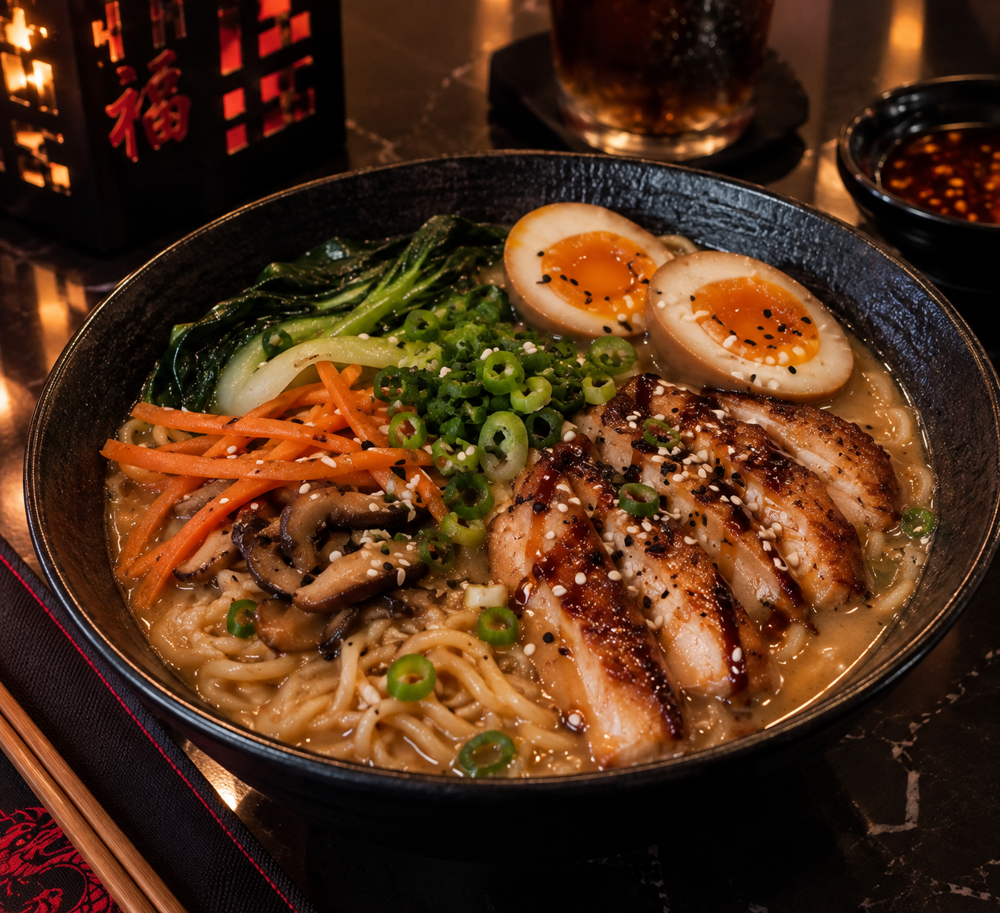

Nuestra propuesta
Cocina china para compartir
En Dragón Dorado celebramos los sabores de la cocina china con recetas preparadas al momento e ingredientes frescos. Nuestra mesa invita a reunirse, descubrir nuevos sabores y disfrutar juntos.
Preparado al momento
Ingredientes frescos
Para compartir